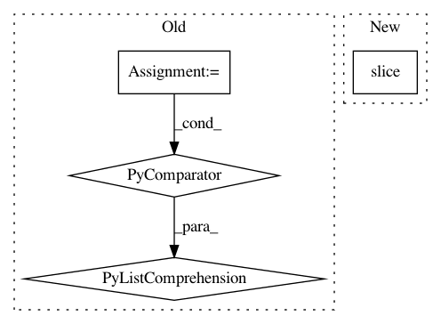

984d17836d7a6240942cd44f2f61c92a427bb9bb,niftynet/layer/crop.py,CropLayer,layer_op,#CropLayer#Any#,25
Before Change
crop_kernel = tf.constant(np_kernel, dtype=inputs.dtype)
// split channel dim
output_tensor = [tf.expand_dims(x, -1)
for x in tf.unstack(inputs, axis=-1)]
output_tensor = [tf.nn.convolution(input=inputs,
filter=crop_kernel,
strides=[1] * spatial_rank,
padding="VALID",
name="conv")
for inputs in output_tensor]
output_tensor = tf.concat(output_tensor, axis=-1)
return output_tensor
After Change
spatial_rank = layer_util.infer_spatial_rank(inputs)
offsets = [0, *([int(self.border)] * spatial_rank), 0]
out_shape = [-1, *[int(d) - 2 * int(self.border) for d in list(inputs.shape)[1:-1]], -1]
output_tensor = tf.slice(inputs, offsets, out_shape)
return output_tensor
In pattern: SUPERPATTERN
Frequency: 4
Non-data size: 4
Instances
Project Name: NifTK/NiftyNet
Commit Name: 984d17836d7a6240942cd44f2f61c92a427bb9bb
Time: 2018-04-24
Author: z.eaton-rosen@ucl.ac.uk
File Name: niftynet/layer/crop.py
Class Name: CropLayer
Method Name: layer_op
Project Name: yangyanli/PointCNN
Commit Name: 86a4393efb842ad65bd170c8beacd40119fd27be
Time: 2018-04-10
Author: yangyan.lee@gmail.com
File Name: pointcnn.py
Class Name: PointCNN
Method Name: __init__
Project Name: cornellius-gp/gpytorch
Commit Name: 3d232f9c1138c39f714799e92b16b3f1019dcd8b
Time: 2019-04-06
Author: gpleiss@gmail.com
File Name: gpytorch/lazy/lazy_evaluated_kernel_tensor.py
Class Name: LazyEvaluatedKernelTensor
Method Name: __getitem__
Project Name: stanford-mast/nn_dataflow
Commit Name: a1c8c7eb8e161adcd444d44d44ec54ba17343a34
Time: 2017-06-28
Author: mgao12@stanford.edu
File Name: nn_dataflow/LoopBlockingScheme.py
Class Name: LoopBlockingScheme
Method Name: _set_unit_cnt